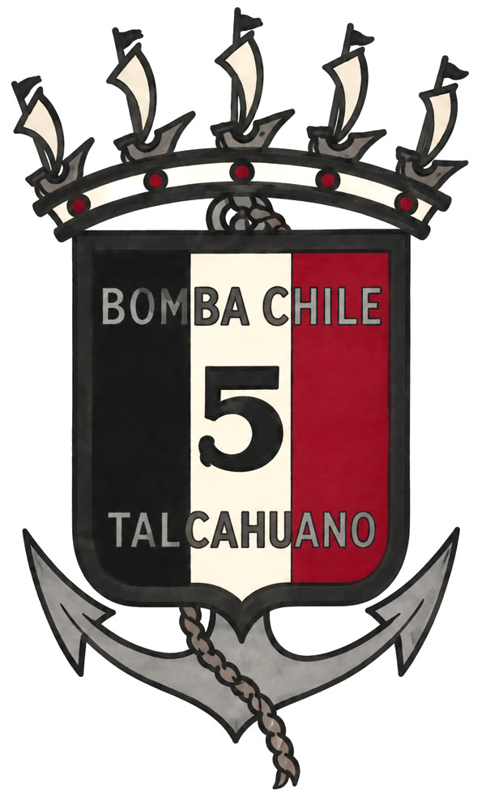
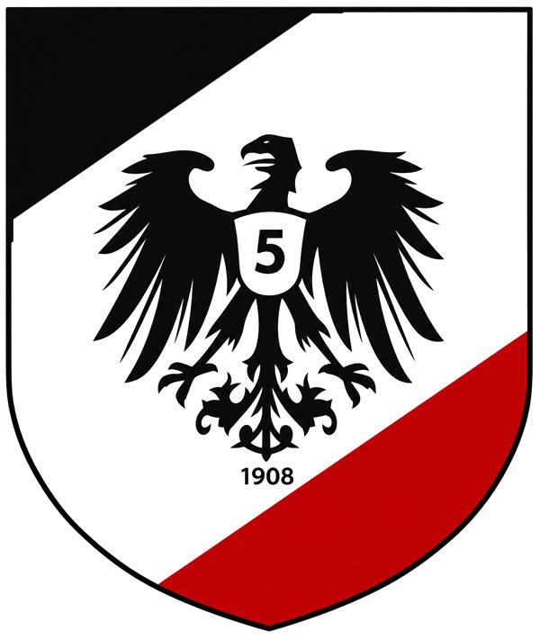
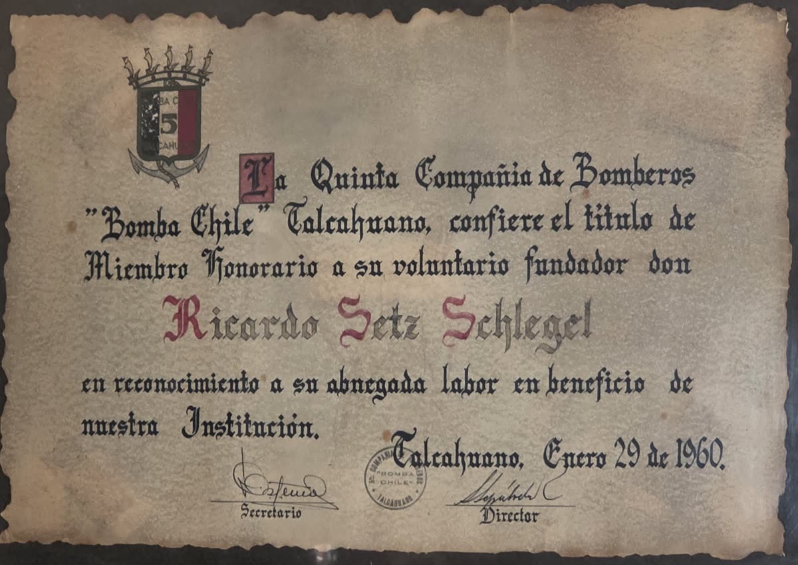

Documentos y objetos que guardan la historia de la Quinta.
Del más antiguo al más nuevo: el escudo del diploma de 1960, con la corona naval de Talcahuano y los colores de la Alemania imperial; el escudo del águila, que se usó hasta 2022, y el escudo actual, vigente desde el 20 de septiembre de 2022.


El 29 de enero de 1960, en el aniversario 52 de la compañía, la Quinta confirió el título de Miembro Honorario a su voluntario fundador Ricardo Setz Schlegel, primer Secretario-Tesorero de 1908.
